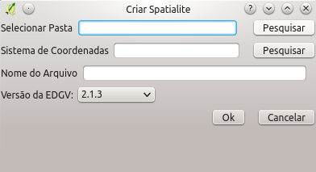

A criação de bancos de dados em Spatialite é feita a partir da seleção de:
uma pasta de destino para o arquivo SQLite ( Selecionar Pasta );
um sistema de referência espacial ( Sistema de Coordenadas );
definição de um nome do arquivo SQLite( Nome do Arquivo ); e
seleção da versão da versão da ET-EDGV ( Versão EDGV ) que será usada para a criação do banco de dados.
